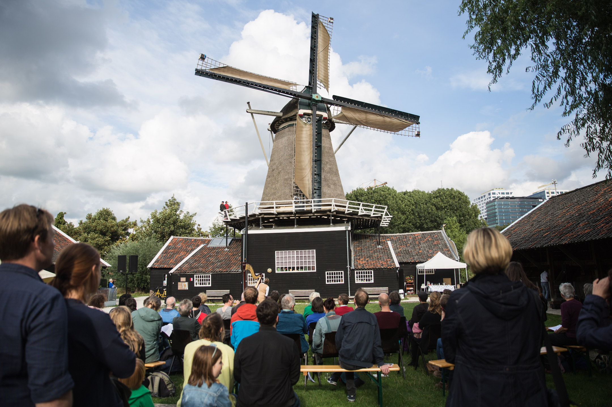

De stem van de molen
Van Iris van der Ende i.s.m. Yvonne FrecmannEen draaiende molen is een vertrouwd beeld in het Nederlandse landschap. Maar hoe klinkt een molen eigenlijk? De wieken zoeven, het mechanisme kraakt, piept en zucht op de stuwing van de wind. In de performance van theatermaker/harpiste Iris van der Ende en componiste Yvonne Freckmann krijgt de molen zelf een stem. Aangejaagd door de wind, vervormd door de draaiende wieken en beantwoord door de harp. Intussen doet de molenaar zijn werk: hij luistert naar de wind en naar de molen. En wij luisteren mee.
Drie jaar geleden experimenteerde kunstenaar Iris van der Ende voor het eerst met muziek bij de molen in de polders in Zuid-Holland. Daarbij kreeg ze hulp van verschillende molenaars. Sinds de samenwerking met Limburgs Landschap in najaar 2016 werkt componiste Yvonne Freckmann mee aan de geluidsperformance.
In ‘De stem van de molen’ spelen een bewegende klankinstallatie, harpmuziek, een vertelling en een draaiende molen de hoofdrol. Terwijl Iris vertelt over de relatie die de molenaar heeft met zijn molen, beantwoordt de harp de klank die van de molen komt. Doordat klankbronnen zijn bevestigd aan de wieken, klinkt het geheel bij iedere windsterkte anders. Soms fluistert de molen, soms zingt hij. Centraal staat de wind die alles beroert en in verwarring brengt. Het publiek zit buiten, aan de voet van de molen. Het kijkt naar de ontketende wieken en hoort hoe de molen een stem krijgt.
- Idee, regie, compositie en harp: Iris van der Ende
- Compositie en elektronica: Yvonne Freckmann
- Dramaturgie: Marijn van der Jagt
- Project van stichting MCEM
- Met dank aan: Clemens Maassen, Mattanja Coehoorn, molenaars Kees Barten, Hans Lippens, Pieter de Haan.
- Ontwikkeld met ondersteuning van: Huis voor de Kunsten Limburg, Kunstsymposium
- Oogsten, Prins Bernhard Cultuurfonds Limburg, Stichting MCEM, Kanunnik
- Salden/Nieuwenhof, M.A.O.C. Gravin van Bylandt Stichting, Art Buro Limburg.
Van Tienhovenmolen
in Margraten

De première van 'De stem van de molen' en onderzoeksweek voor 'Muzikale Studie voor Molen, Harp en Wind' vond plaats bij Kunstsymposium Oogsten van PlateauKunst bij Van Tienhoven molen in Margraten. Dat is een beltkorenmolen van Limburgs Landschap die is gemaakt van mergelsteen.
We speelden vijf voorstellingen op 15, 16 en 17 april 2017 en de molen werd bediend door molenaars Kees Barten en Huub Willems. Het waaide de hele onderzoeksweek, behalve 1 dag. En bij de voorstellingen waaide het de ene dag sterk en de andere dag viel het soms bijna stil.
Je ziet dat de molenaar in de wiek klimt om het zeil erop te leggen.
Beltkorenmolen
in Nuth
De uitvoeringen voor Cultura Nova Festival was bij de Beltkorenmolen in Nuth. Tussen de aardappelvelden en dalen ligt deze molen en steekt boven de omgeving uit. De vader van de huidige molenaar Jean Delbressine maalde de molen toen die nog in bedrijf was. Molenaar Jean Delbressine en molenaarsleerling Samuel Thewessen bedienden de molen voor onze voorstellingen.
- Zondag 27 augustus 2017
- Twee zonnige middag uitvoeringen met windkracht 2,3
Molen de Ster
in Utrecht

Zaterdag 8 September 2018
De houtzaagmolen-uitvoering voor Gaudeamus Muziekweek bij Molen de Ster in Utrecht. Gaudeamus organiseerde een mini muziekfestival bij de molen. De molen heeft 1 zaag die bomen in plakjes snijdt. Vroeger waren er drie zagen. Je kan je voorstellen dat er andere geluiden te horen zijn bij de zaagmolen dan bij een korenmolen. De molen staat midden in de stad tussen de bebouwing, vroeger was het de rand van de stad en kwam de wind aangewaaid over weilanden. De molen werd voor onze voorstelling bediend door molenaars Piet van Os en molenaarsleerling Marloes Stofferis.
Zachte herfstdag, zonnig, met windkracht 2, de molen viel afwisselend stil en werd weer aangejaagd door de wind.